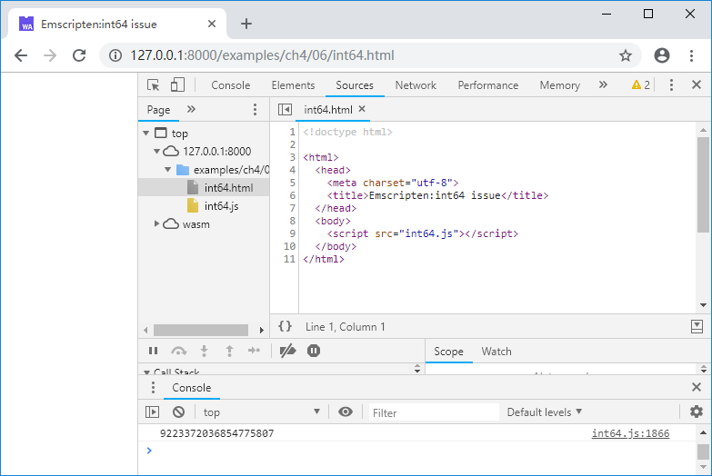

4.6 小心int64
本节将介绍Emscripten中64位整型数支持的一些问题。
4.6.1 WebAssembly原生支持int64
首先，WebAssembly原生支持64位整型数算术运算。例如C代码如下：
//int64.cc
int main() {
int64_t a = 9223372036854775806; //0x7FFFFFFFFFFFFFFE
a += 1;
printf("%lld\n", a);
}
浏览页面后控制台输出如下：

可见int64加法运算可以正常执行，printf()亦可正常输出结果。然而，如果C/C++试图与JavaScript交换64位整型数就会遇到麻烦。
4.6.2 导出函数包含int64
JavaScript只有一种数值类型：number——等同于C语言中的double，JavaScript本质上无法直接表达64位整型数，因此目前的WebAssembly规范中存在这么一条尴尬的限制：
info WebAssembly导出函数不能使用64位整型数作为参数或返回值，一旦在JavaScript中调用参数或返回值类型为64位整型数的WebAssembly函数，将抛出
TypeError，详见《WebAssembly标准入门》3.7节。
由于该限制的存在，Emscripten做了如下妥协：
- 当导出函数的某个参数为64位整型数时，将其拆分为低32位、高32位两个参数进行传送；
- 当导出函数的返回值为64位整型数时，在JavaScript中仅能接收其低32位。
例如下列C函数定义：
int64_t func(int64_t a, int64_t b)
导出至JavaScript后将变为：
int32_t func(int32_t a_lo, int32_t a_hi, int32_t b_lo, int32_t b_hi)
其中a_lo/a_hi分别为a的低32位/高32位；b_lo/b_hi类同。
例如C代码如下：
//int64_exp.cc
EM_PORT_API(int64_t) i64_add(int64_t a, int64_t b) {
int64_t c = a + b;
printf("a:%lld, b:%lld:, a+b: %lld\n", a, b, c);
return c;
}
int main() {
printf("main():");
printf("%lld\n", i64_add(9223372036854775806, 1));
}
在JavaScript中调用导出函数i64_add()时应使用如下方法：
//int64_exp.html
Module = {};
Module.onRuntimeInitialized = function() {
console.log(Module._i64_add(0xFFFFFFFE,0x7FFFFFFF, 1, 0));
}
浏览页面后控制台输出如下：

注意前两行输出对应JavaScript中的console.log(Module._i64_add(0xFFFFFFFE,0x7FFFFFFF, 1, 0));，可以看到每个int64切分为2个int32后传入C代码中正确执行了加法，但返回值仅保留了低32位（0xFFFFFFFF）为-1。而后两行输出对应C中的printf("%lld\n", i64_add(9223372036854775806, 1));算术运算的结果和输出都是正确的。
4.6.2 注入函数包含int64
使用2.2节的方法，在JavaScript中实现C函数接口时，如果该函数接口的参数包含了64位整型数，也会按照同样的方式进行低32位/高32位的拆分，例如C函数i64_func()接口如下：
//int64_imp.cc
EM_PORT_API(void) i64_func(int64_t a, int64_t b);
int main() {
i64_func(0x7FFFFFFFFFFFFFFF, 1);
}
注入库的JavaScript方法会收到4个参数，依次为a_lo、a_hi、b_lo、b_hi：
//pkg.js
mergeInto(LibraryManager.library, {
i64_func: function (a_lo, a_hi, b_lo, b_hi) {
console.log('a_lo: ', a_lo, ', a_hi:', a_hi, ', b_lo:', b_lo, ', b_hi:', b_hi);
}
})
使用下列命令编译：
emcc int64_imp.cc --js-library pkg.js -o int64_imp.js
浏览页面后控制台输出如下：

4.6.4 小结
由上述例子可见，由于JavaScript自身的缺陷，包含int64参数/返回值的C函数在Emscripten中导入导出时会发生意外的形变。 修改JavaScript标准，使其原生支持64位整型数的呼声一直很高，在这一天真的到来之前，笔者的建议是：尽量不要在JavaScript与C/C++之间交换int64。